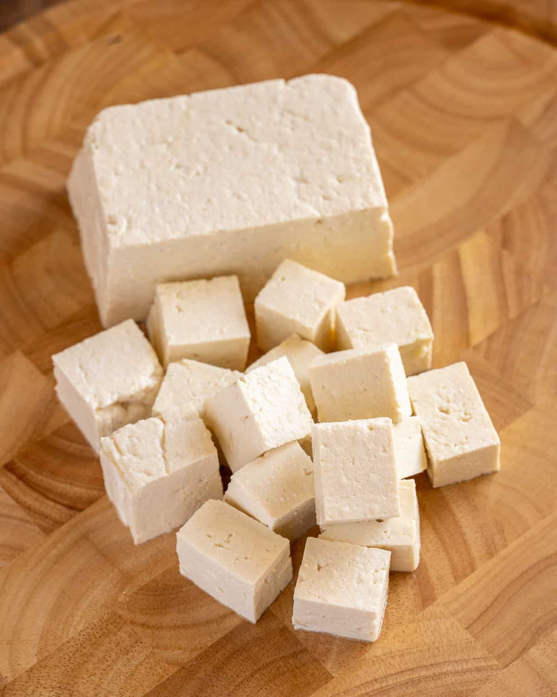
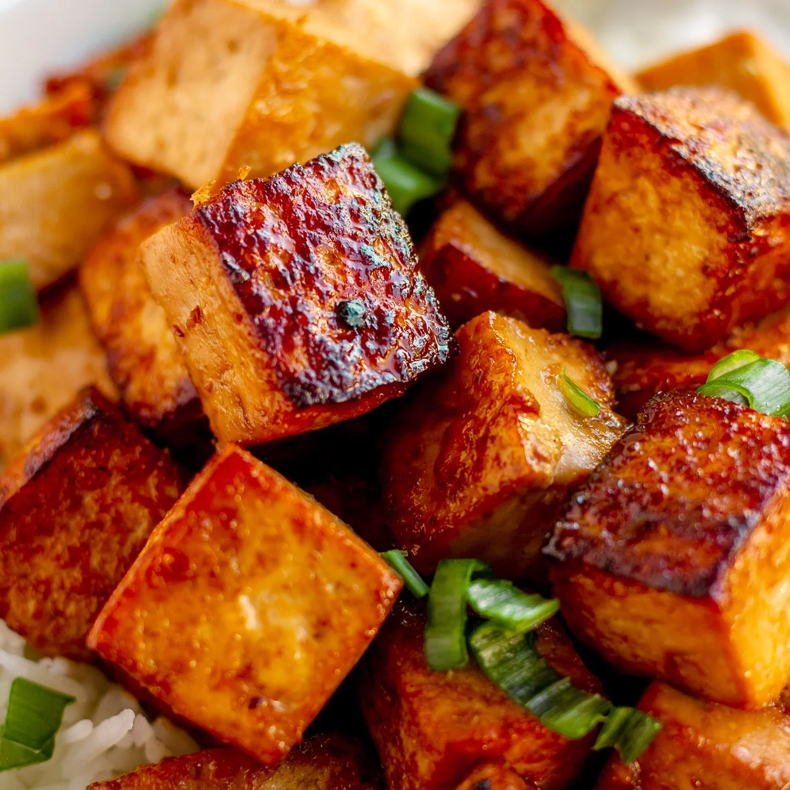
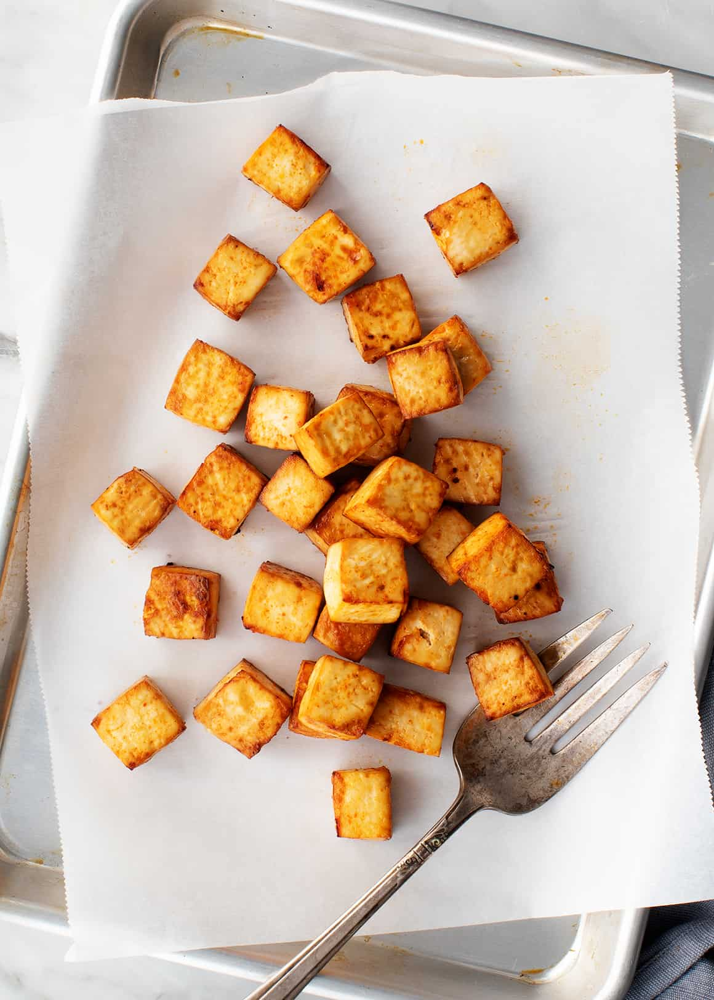

Delicious Tofu Recipes

Crispy Tofu
Perfect crispy tofu that's crispy outside and tender inside.

Mapo Tofu
Classic Sichuan dish with silky tofu in spicy sauce.

Tofu Scramble
Healthy breakfast alternative that's full of protein.
Types of Tofu
Silken Tofu
Smooth and delicate, perfect for soups and desserts.
Firm Tofu
Great for stir-frying and grilling.
Extra Firm Tofu
Ideal for crispy dishes and meat substitutes.
Nutritional Benefits
Protein Rich
High quality plant-based protein source.
Low Calorie
Perfect for weight management.
Versatile
Can be used in countless dishes.